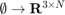
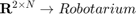
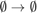

Robotarium
A class that models your communications with the GRITSbots! This class handles retrieving the poses of agents, setting their velocities, iterating the simulation, and saving data.
Contents
Method Description
- get_poses():  retrieves the poses of the agents in a 3 x N vector, where each column contains the pose of an agent.
- set_velocities():  sets the velocities of each agent using a 2 x N vector. Each column represents the linear and angular velocity of an agent.
- step():  iterates the simulation, updating the state of each agent. This function should be called for each "iteration" of your experiment. Additionally, it should only be called once per call of get_poses().
classdef Robotarium < ARobotarium %Robotarium This is the Robotarium simulator object that represents %your communications with the GRITSbots. % This class handles retrieving the poses of agents, setting their % velocities, iterating the simulation, and saving data. % THIS CLASS SHOULD NEVER BE MODIFIED properties (GetAccess = private, SetAccess = private) previous_timestep checked_poses_already = false called_step_already = true x_lin_vel_coef = 0.86; y_lin_vel_coef = 0.81; ang_vel_coef = 0.46; end methods function this = Robotarium(number_of_agents, save_data, initial_poses) this = this@ARobotarium(number_of_agents, save_data, initial_poses); this.previous_timestep = tic; this.initialize_visualization() end function poses = get_poses(this) assert(~this.checked_poses_already, 'Can only call get_poses() once per call of step()!'); poses = this.poses; %Include delay to mimic behavior of real system this.previous_timestep = tic; %Make sure it's only called once per iteration this.checked_poses_already = true; this.called_step_already = false; end function step(this) assert(~this.called_step_already, 'Make sure you call get_poses before calling step!'); %Vectorize update to states i = 1:this.number_of_agents; total_time = this.time_step + max(0, toc(this.previous_timestep) - this.time_step); %Update velocities using unicycle dynamics this.poses(1, i) = this.poses(1, i) + this.x_lin_vel_coef*total_time.*this.velocities(1, i).*cos(this.poses(3, i)); this.poses(2, i) = this.poses(2, i) + this.y_lin_vel_coef*total_time.*this.velocities(1, i).*sin(this.poses(3, i)); this.poses(3, i) = this.poses(3, i) + this.ang_vel_coef*total_time.*this.velocities(2, i); %Ensure that we're in the right range this.poses(3, i) = atan2(sin(this.poses(3, i)), cos(this.poses(3, i))); %Allow getting of poses again this.checked_poses_already = false; this.called_step_already = true; if(this.save_data) this.save(); end this.draw_robots(); end function call_at_scripts_end(this) if(this.save_data) this.mat_file_path.robotarium_data = this.mat_file_path.robotarium_data(:, 1:(this.current_saved_iterations-1)); end end end end